Catalogs
Catalog is the category where the user creates the catalog based on the metadata of the data source. In catalog generation, tagging and labeling are supported. To create a new catalog the user needs to fill the catalog name which needs to be a unique name to prevent any kind of issues that might happen, choose a data source from existing ones or the newly created from where all the columns, tables are going to be retrieved. There is also a part for lazy loading that fetches total counts of records within the data source, which will run every time a scheduled catalog is triggered and will automatically be inside. There are two features inside the catalog category, one is for tagging and labeling, and the other one for scheduling where users can select a time interval when to run it. All these changes are saved and the new catalog is shown in a list of Catalogs with some fields that have all the statistics calculated and set in the previous step, like how many tables and columns are crawled, when is the last run, and options to edit, delete and run the catalog. With run option, AdaptiveScale retrieves all the information from the data source and it applies the catalog rules set.
Example
Create a catalog
To create a data catalog, the user must click on Catalogs tab from the menu on the left.
If there are no catalogs configured, the user can click on New Catalog button to add a new catalog.
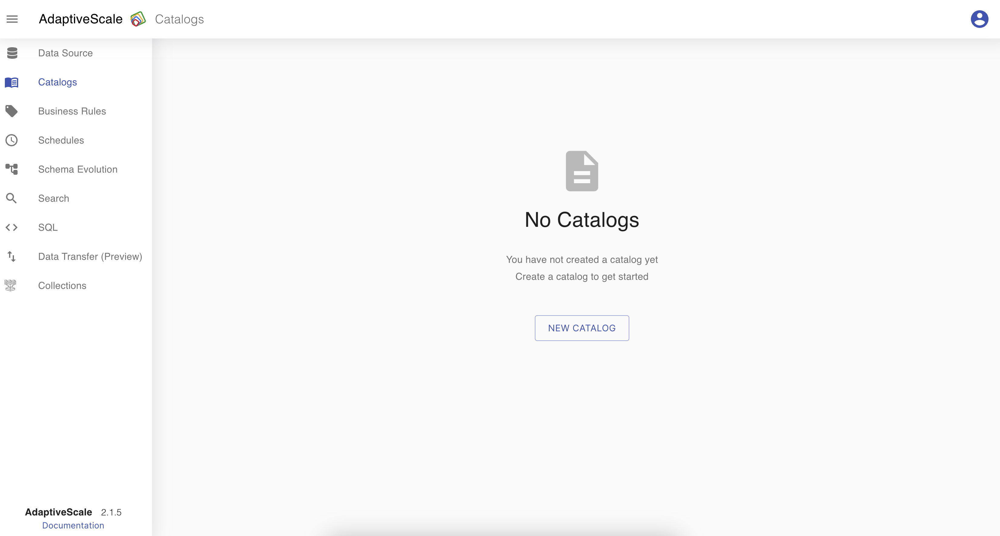
Select a connection
Same as in the Data source category, in Catalogs the user must fill the catalog name that should be unique, choose a data source connection, and all tables are filled automatically. There is an option to select all the table fields by choosing All or select as many as the user wants by choosing Selected tables.
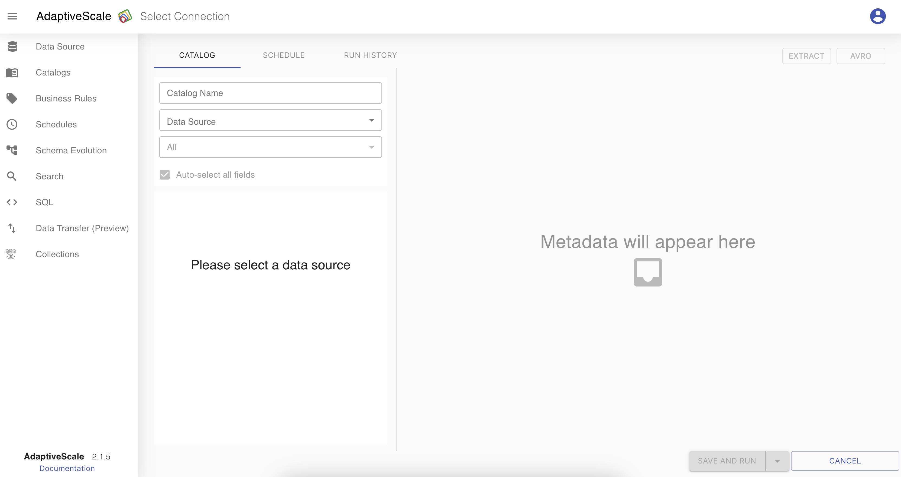
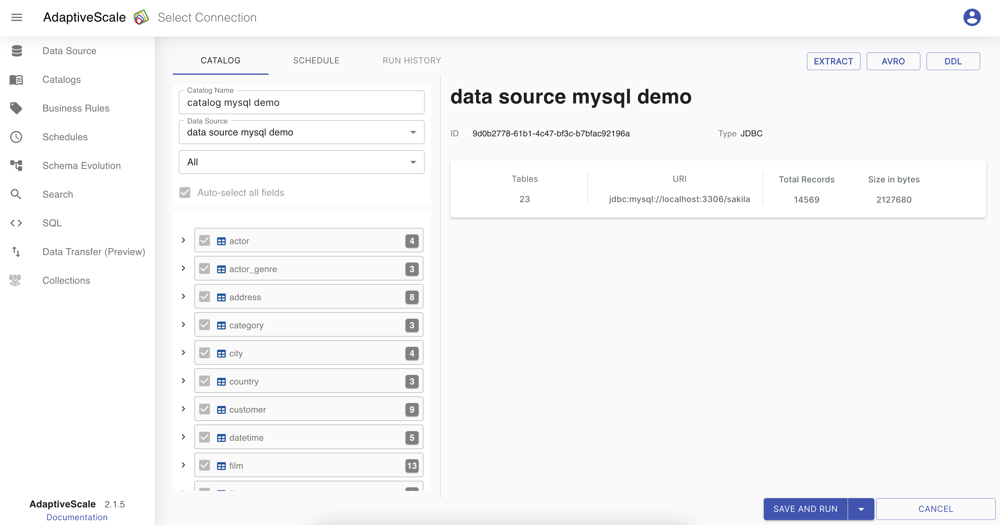
In the tables section, tables are represented as a tree view, where the user can see the table name and how many columns it has. When one of the tables or columns is selected the Details section is visible with all the detail of the selected table or column, such as type, number of records, number of fields and so on.
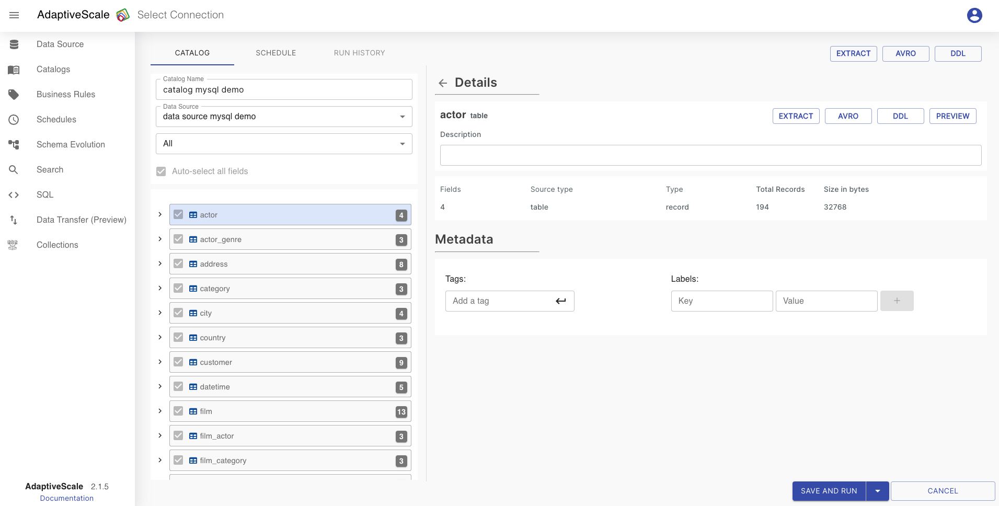
That table then can be expanded and the user can see all the columns together.
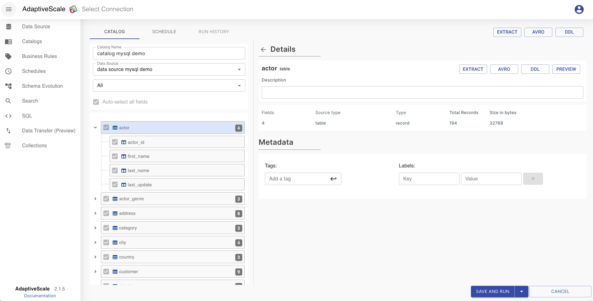
At the upper right corner, there are some buttons that have different functionalities. The difference between the ones at the top and the others inside the Details section is that those in the top are for the catalog schema, and those inside the Details section are applied only for the table or column selected.
Extract - JSON schema of the table or the data source.
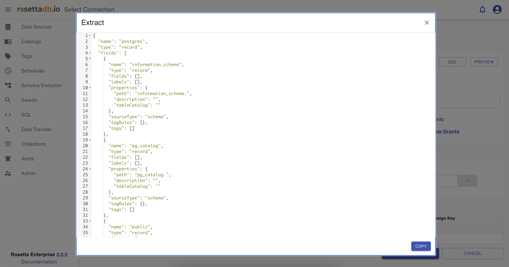
AVRO - AVRO schema of the table or data source.
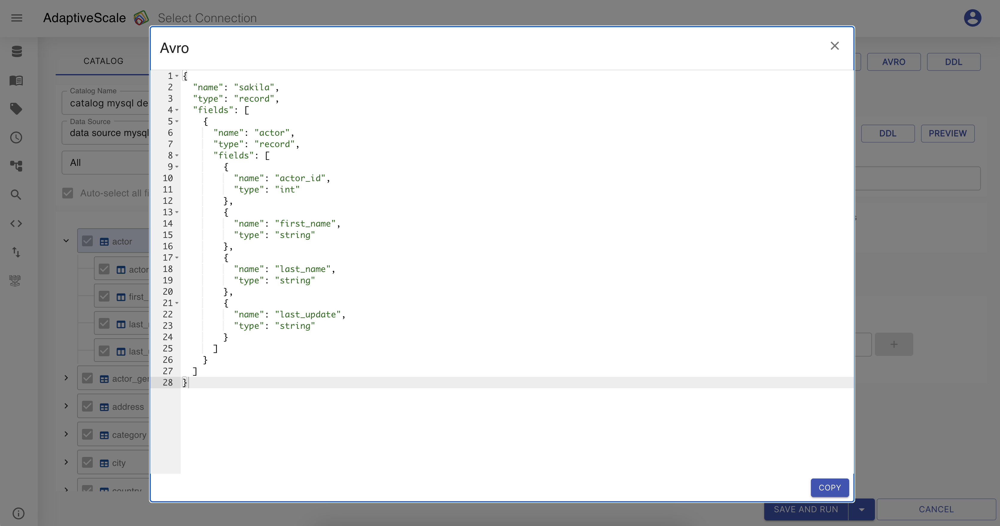
DDL- Data definition language DDL of the table or data source
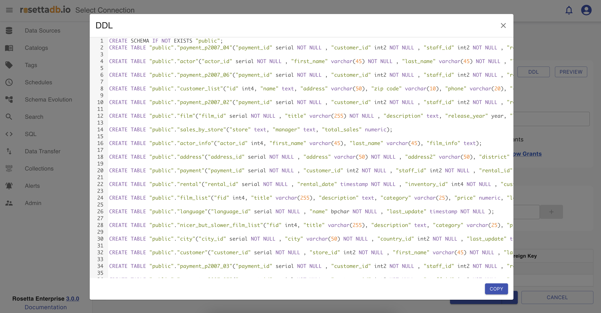
All of these schema types and DDLs can be copied and used in advance by clicking on their Copy button.
There is also a Prievew button that when is clicked it shows a sample of the data.
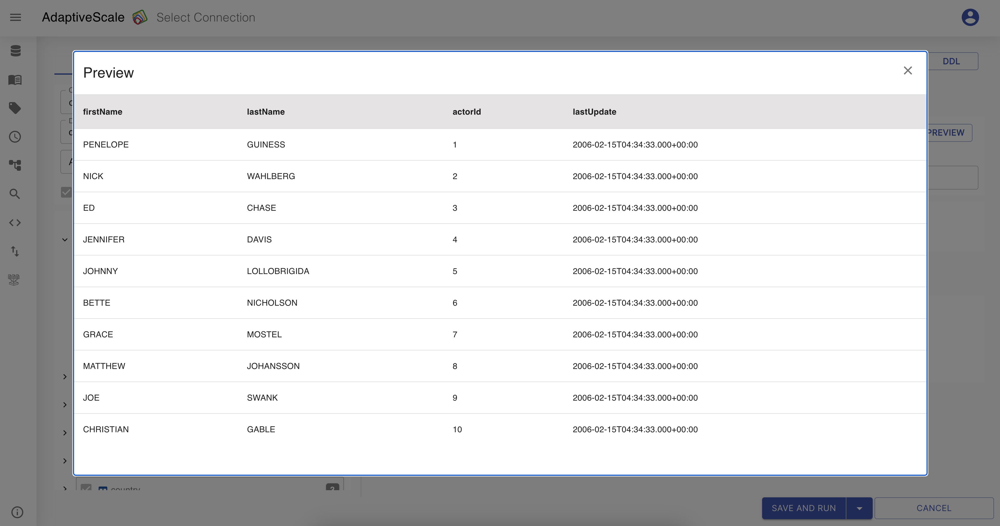
Tag a column
In the metadata section, at the bottom right corner, the user is able to tag a table or a column.
To add a tag, the user should click on the table or on the column, add a tag name on the input field next to Tag and press on Enter.
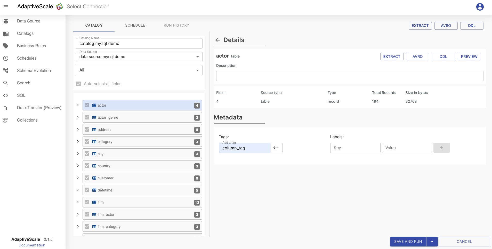
If the column is tagged, is has an icon on the column with the tag name on it.
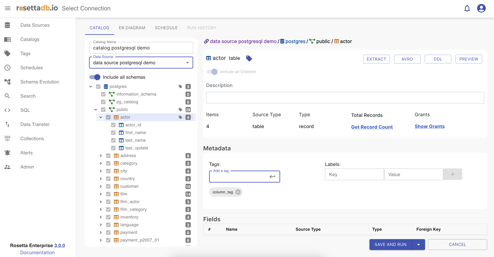
Label a column
Same as for tagging, labeling is one other feature on metadata section.
To add a label, the user should click on the table or on the column, add a key and value for labeling and click on + button. If the user wants to delete the label should click on - button.
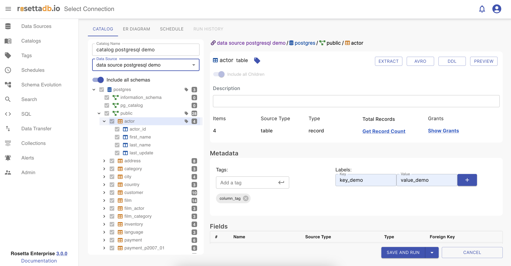
If the column is labeled, is has an icon on the column with the label on it.

Now that the user has finished with setting a catalog it can choose whether it wants to set a schedule on the next tab or just Save and Run the catalog.
Schedule a run
If the user wants to add a scheduler, it should enable the add scheduler toggle, if not, it should click on Save and Run button.
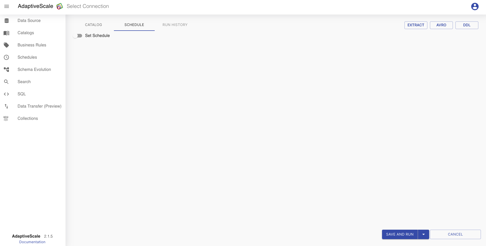
Once the toggle is enabled, the user can set a scheduler to run the catalog. First should be set a start date and an end date. After that, the user can choose if the scheduler can run monthly, weekly, daily, hourly or in minutes and in what hour.
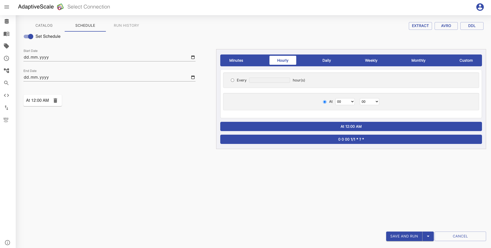
To save the process the user must click on Save and Run button and the catalog will be created.
Upload a catalog
To upload a catalog you need to upload the configured json on the upload catalog button. For preparing an external catalog json you need to define few elements in the json. The mandatory fields are:
namedatasourceNamedataSourceIdincludeAllSchemasschemaschedule
You can also upload an external catalog directly from API by sending the json file as body in this endpoint api/catalog/third-party
Here is an example of an external catalog:
{
"dataSourceDescription": "test-csv",
"dataSourceId": "3e0fe597-5cc7-4293-a887-49a5ae588961",
"dataSourceName": "test-csv",
"id": "2c8e4027-8537-4017-bd8e-93f1e84998fa",
"includeAllSchemas": false,
"lastRun": "",
"lastRunId": "",
"name": "csv-catalog",
"schema": {
"name": "titanic.csv",
"type": "record",
"fields": [
{
"name": "PassengerId",
"type": "int",
"labels": [],
"properties": {
"description": ""
},
"sourceType": "int",
"tagRules": {},
"tags": []
}
],
"labels": [],
"properties": {
"createdDate": "2022-10-26T11:29:09.274+02:00",
"description": ""
},
"tagRules": {},
"tags": []
}
}
Edit a catalog
Now that one catalog is configured, on Catalog tab the user can see a list of the catalogs and a button Add Catalog that redirects to the Catalogs screen for creating a new catalog. The catalog can be edited, deleted, ran and searched.
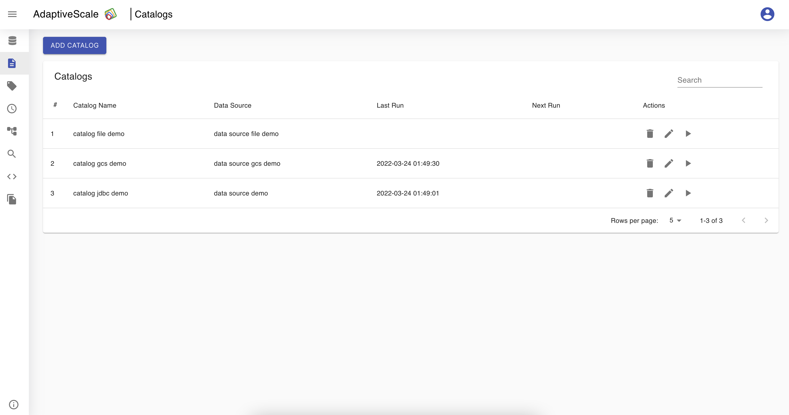
When the user clicks on the pen icon next to the catalog from the list they can edit the name, tags, labels or scheduler, and save the changes.
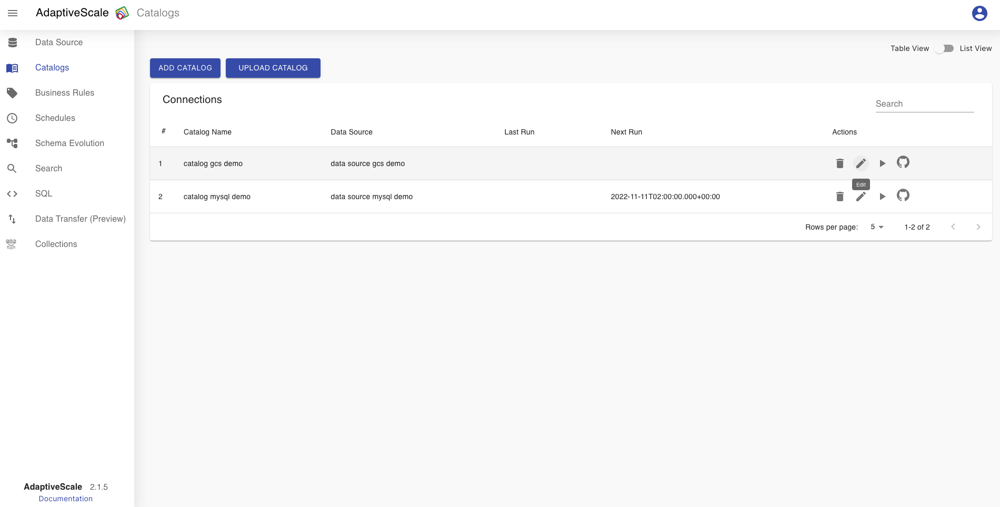
Delete a catalog
The deletion of a catalog is done by clicking on the bin icon.
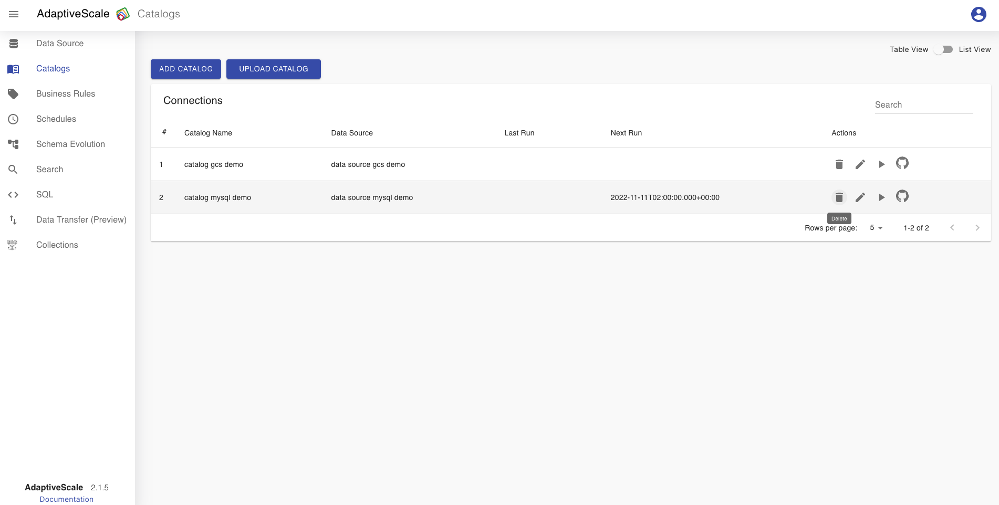
When the icon is clicked, a pop up appears with a question if the user is sure about deleting the catalog, and if yes the user clicks Delete and if not clicks Cancel.

Run a catalog
To run a catalog from the catalog list the user must click on the play icon. 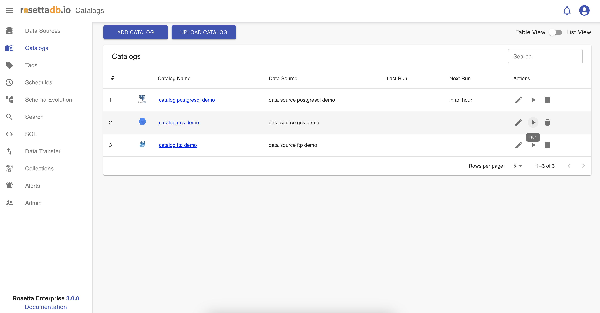
With that click the changes made on the catalog are saved and can be viewed in the schema evolution, data lineage.
Run History
Run History tab lists all the runs of the catalog.
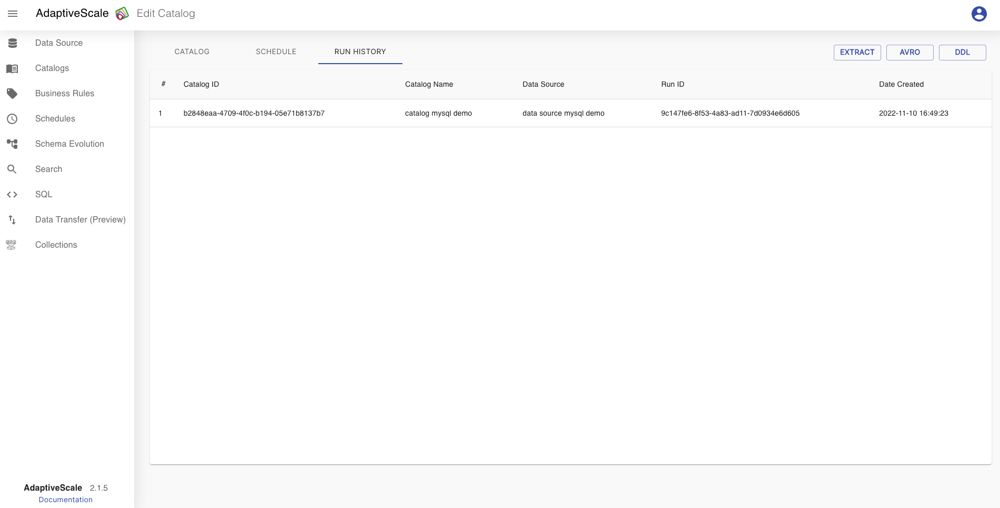
Search for a catalog
The user can search for a catalog from the list of catalogs. The catalog that we created as an example is named catalog data source, so if the user searches for test there will be no results.
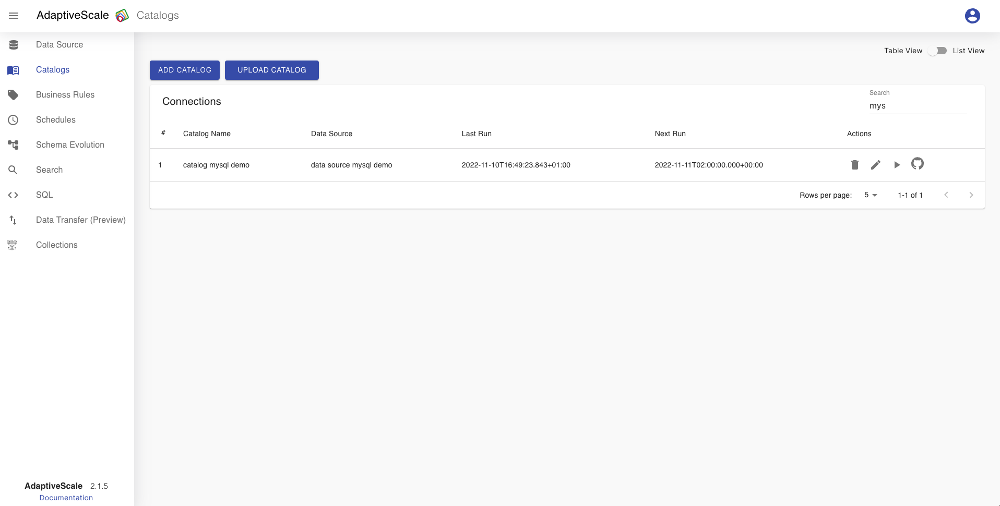